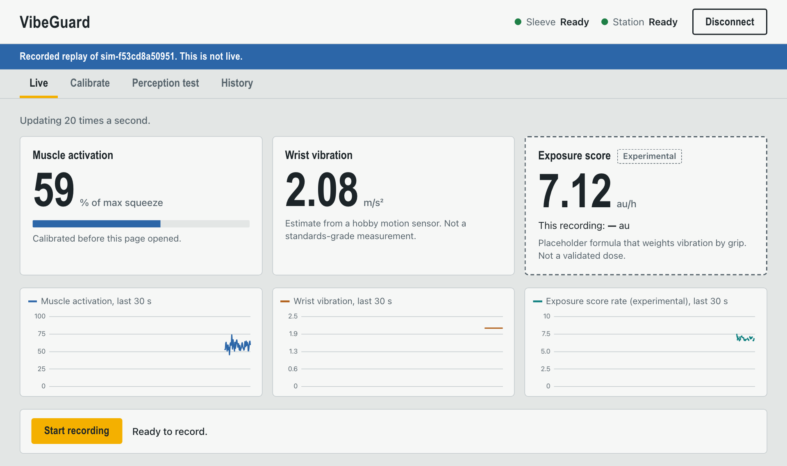

Muscle activation
Forearm muscle signal (EMG), shown relative to your own calibration: a relaxed reading and a hard squeeze. Not force, not %MVC, not clinically validated.
emg0 · calibratedyour range
59% of max squeeze
replayof a recorded session, not live data.
Where it stands
A forearm sleeve that measures muscle effort and wrist vibration together, plus a quick fingertip test. Exposure to vibrating tools becomes something you can see and talk about.

The problem
Hours on the tool times its rated vibration. That says little about the person holding it.
Hand-arm vibration syndrome comes from regular, long-term use of vibrating hand tools. Exposure is typically estimated from a tool’s rated vibration and the hours it was used.
VibeGuard explores adding what the worker’s own arm is doing: how hard the forearm muscles are working, and the vibration that actually reaches the wrist. It is an idea we are prototyping, not a validated method.
What it measures
Each number says what it is, and none is dressed up as something it is not.
Forearm muscle signal (EMG), shown relative to your own calibration: a relaxed reading and a hard squeeze. Not force, not %MVC, not clinically validated.
Vibration measured by a motion sensor on the wrist, within what that sensor can actually capture. Unweighted. Not ISO 5349 dosimetry.
A placeholder formula that combines vibration with grip effort, in arbitrary units, so the idea can be shown end to end. Not a dose. Not a percentage of any limit.
How it works
Four steps. The dashboard shows where every number came from.
Electrodes on the forearm, a motion sensor at the wrist. Then three seconds relaxed and three seconds squeezing.
calibrated
Live activation, vibration and score, about twenty updates a second. Record a session when you want to keep it.
A small motor buzzes at your fingertip at different settings. A missed answer is saved as missing, never as “no”.
Sessions and test results are stored and listed with where their data came from.
Honest by design
The demo you can open is a replay, and its banner says so the whole time.
Nothing on any screen is a diagnosis.
The score is experimental. There is no safe or unsafe cut-off.
The fingertip test does not detect nerve damage. Motor settings are drive levels, not measured vibration.
Measurements stay within what a hobby sensor can do. No compliance is claimed.
Under the hood
Four parts, each tested on its own. One command starts the demo.
$ uv run vg-backend serve --backup backup/demo-session --loop vg-backend: REPLAY FALLBACK from backup/demo-session (labelled replay, not live), looping vg-backend: dashboard at http://127.0.0.1:8765/dashboard/ ✓ Application startup complete.
ESP32 firmware reads EMG and a motion sensor and sends records over USB serial in a documented, versioned format.
Calibration, vibration features and the experimental score, tested against simulated and recorded streams.
Live updates, saved sessions, a labelled replay fallback, and checks that refuse mislabelled data.
Plain HTML and JavaScript with no build step: live view, calibration, the fingertip test and history.
Status · November 2026
Questions
No. It is a hackathon prototype for demonstration. Nothing it shows is a diagnosis.
No. The exposure score is experimental and in arbitrary units. It is not a dose, and there is no safe or unsafe cut-off behind it.
Which motor settings a person reports feeling. It does not detect nerve damage, and the settings are drive levels, not measured vibration.
No. It replays a recorded session, and the dashboard shows a “Recorded replay” banner the whole time.
To the laptop running the backend. Sessions are saved there; there is no cloud account.
A recorded session, played back with every label in place.